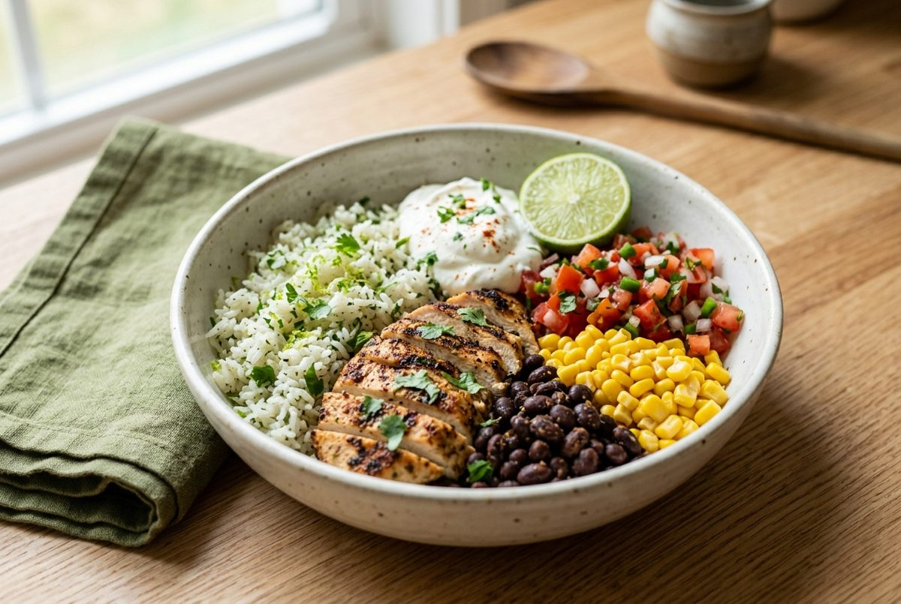
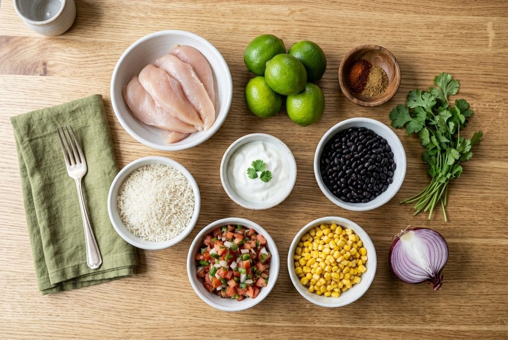
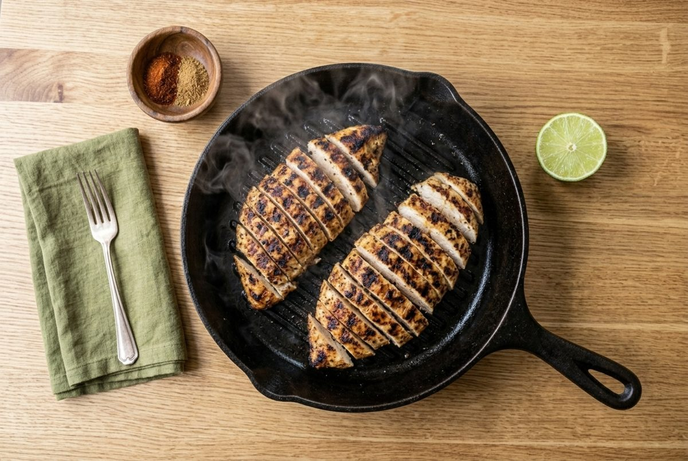
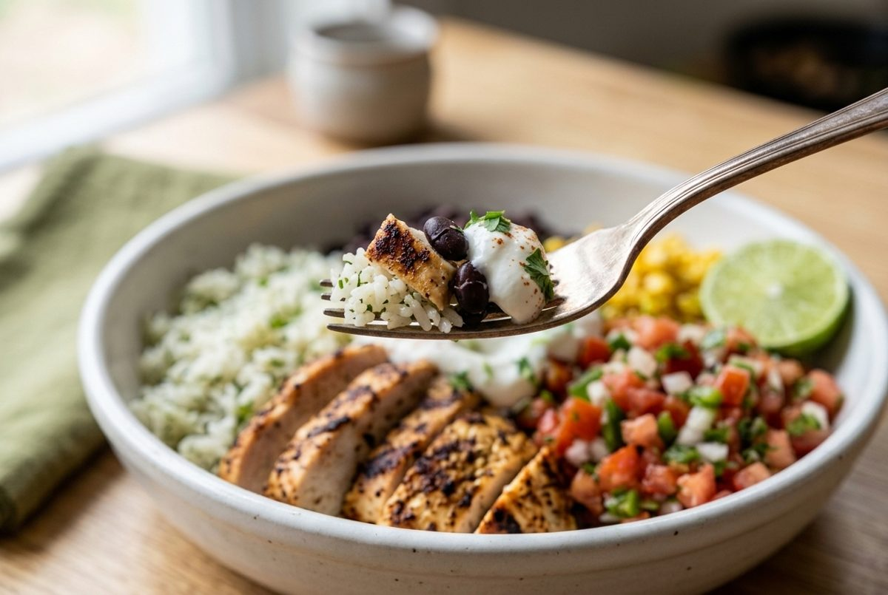

Chipotle-Style Chicken Burrito Bowls (46g Protein Meal Prep)
Per serving (1 bowl). Nutrition is an estimate and varies with brands.

These burrito bowls have everything you want from a takeaway version, with smoky grilled chicken, cilantro lime rice, black beans, sweet corn and fresh salsa. A spoonful of Greek yogurt takes the place of sour cream and adds more protein.
Each bowl has 46g protein and 490 calories. Every part can be cooked ahead, so it works well as easy meal prep for work.
Pack the salsa and yogurt in small separate pots and add them just before eating.
Ingredients

- 1.25 lb (570g) boneless skinless chicken breast
- 1 tbsp (15ml) olive oil
- 1 tbsp (8g) chili powder
- 2 tsp (4g) ground cumin
- 1/2 tsp salt
- 3/4 cup (140g) uncooked white rice
- 3 limes: 2 juiced, 1 cut into wedges
- 1/4 cup (10g) chopped cilantro (coriander), divided
- 1 can (15 oz / 425g) black beans, drained and rinsed
- 1 cup (165g) sweet corn, canned or thawed from frozen
- 1 cup (240g) fresh tomato salsa (pico de gallo)
- 1/2 cup (120g) plain nonfat Greek yogurt
- 1/4 red onion, finely diced (optional)
Instructions
- Cook the rice following the package directions. Fluff with a fork and stir in the juice of 1 lime and half the cilantro.
- Slice the chicken breasts in half horizontally to make thinner cutlets. Rub with the olive oil, chili powder, cumin and salt.
- Heat a grill pan or skillet over medium-high heat. Cook the chicken for 5 to 6 minutes per side, until 165°F (74°C) inside. Rest for 5 minutes, then slice.

- Warm the beans and corn for 1 minute each in the microwave, or leave them cold.
- Mix the Greek yogurt with the juice of the second lime and a pinch of salt.
- Build each bowl with rice, chicken, beans, corn and salsa. Add a spoonful of the yogurt, the remaining cilantro, the red onion and a lime wedge.

Meal Prep, Storage and Reheating
- Fridge: keeps for 4 days in airtight containers.
- Keep apart: store the salsa and yogurt in small separate pots so the rice does not get soggy.
- Freezer: the rice and chicken freeze well for up to 2 months. Do not freeze the salsa or yogurt.
- Reheat: microwave the rice and chicken for 2 minutes, then add the cold toppings.
Quick Questions
Can I use chicken thighs? Yes. Boneless skinless thighs give a juicier result and need a few more minutes.
How do I make it spicier? Add a chopped chipotle in adobo to the yogurt, or a pinch of cayenne to the chicken rub.
Can I make it vegetarian? Yes. Swap the chicken for a second can of beans. The protein per bowl drops to about 25g.